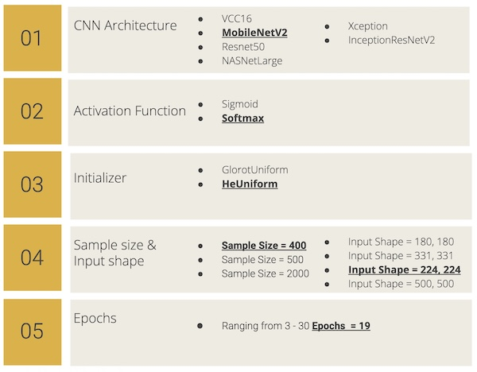
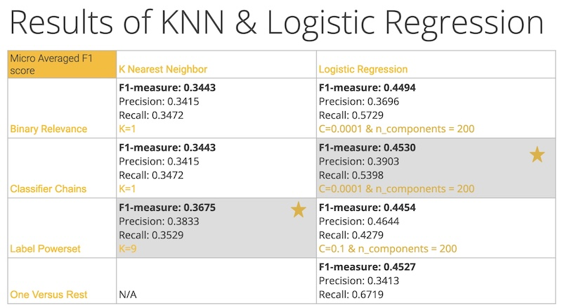
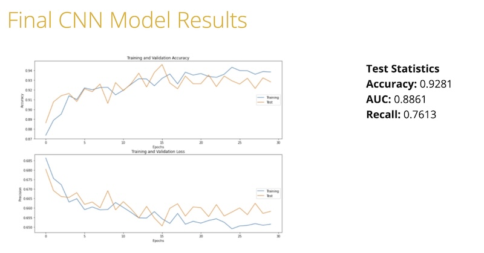

Apple Disease Detection Using Leaf Symptomatology & Image Classifiers
Early detection of disease in apple orchards can positively impact the US apple industry which suffers millions of dollars in loss due to various disease states.
TECHNIQUE (Models), Technology & Metrics
Technique
General Approach
- Apple leaves reveal various disease states such as “powdery mildew”, and “apple scab”.
- Train various classifier models on pre-labeled images of diseased and disease-free apple leaves.
- Use trained model to classify disease-state in leaf images obtained by drones or vehicles surveying orchards.
KNN Classifier Model
- Since one apple/apple leaf can have multiple disease-states associated, multi-label classification
strategies were used such as the following:
- Labeled Power Set
- Classifier Chains
- Binary Relevance
Logistic Regression Model
- Since one apple/apple leaf can have multiple disease-states associated, multi-label classification
strategies were used such as the following:
- Labeled Power Set
- Classifier Chains
- Binary Relevance
- One Versus Rest
CNN Model
- Various architecture,initializer combinations were used.
- The best performing combination is underlined as shown in the image below.

Technology
- Models used
- KNN
- Logistic Regression
- CNN
- Python
- Keras
- TensorFlow
- Jupyter Notebook
- Principal Component Analysis
Metrics
- F1 Score
- Precision
- Recall
- Accuracy
- AUC
Results Overview


Discussion
- Of all the models, the CNN model performed best with metrics as shown in the image above.
- At the time of the experiment, our accuracy rate of 90%+ was highly competitive as compared to the Plant Pathology 2021 - FGVC8 Competition posted on kaggle.
Note: Code and other details are available on request.